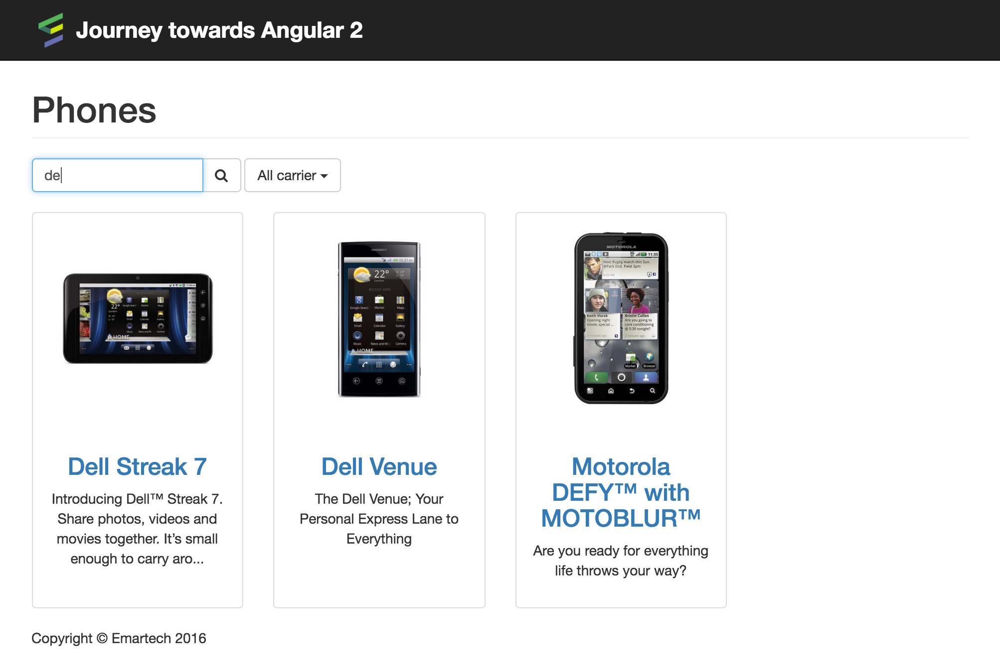
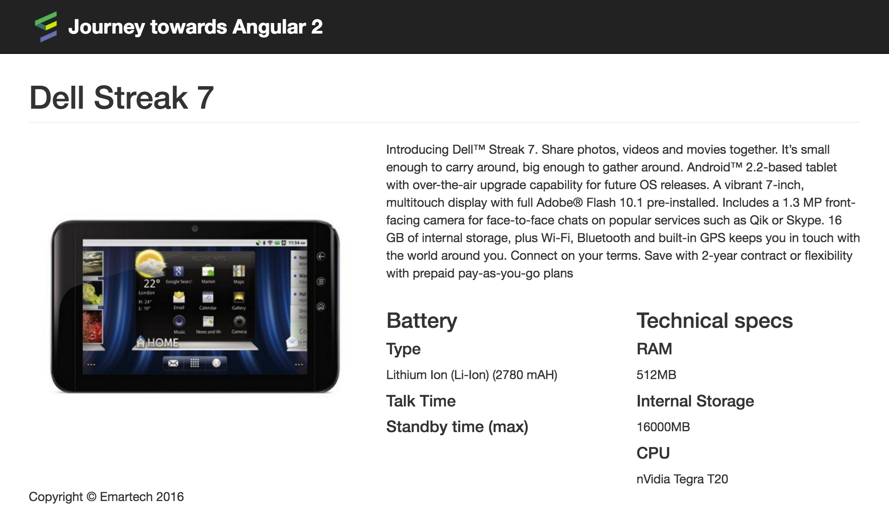
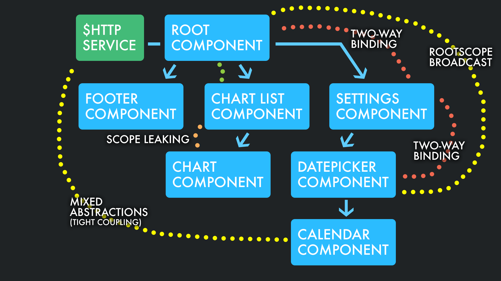
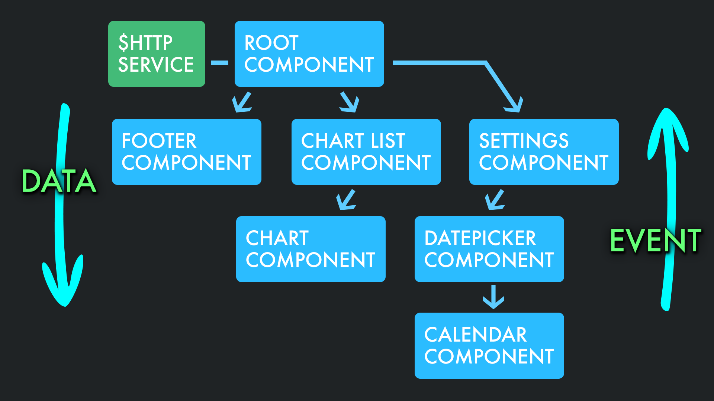

Journey towards Angular 2
András Fincza and Gábor Soós
Today's agenda
9.00-10.30 Workshop
10.30-10.45 Coffee break
10.45-12.15 Workshop cont’d.
12.15-13.15 Lunch
13.15-15.00 Workshop
B2C Marketing Cloud
50+ service in the backend
Frontend is composition
of separate SPAs
Angular-based Widgets

Dashboard
Angular 1
Campaign Editor
WIP / Angular 2
What we do today
Refactor a spaghetti-like Angular application using future-proof concepts
Timeline
Hacky hacky
Fix abstractions
Components
One-way binding
Clean data flow
Smart & Dumb
components
components
Root components
Angular 2
There will be no...
Tests OMG!
Angular 2
Typescript ;)
Just fun!!
ES6, Webpack
Clean OOP interfaces
Angular 2 like
Look at the
Starter app
Technical overview
Static files
Angular 1 + ng-router + http
Controllers & directives
Global modules

Phone-list
ng-controller ($http, $watch)
ng-controller ($http, $watch)
Search-box
directive (2-way-binding)
directive (2-way-binding)
Carrier-select
directive ($http, $rootScope broadcast)
directive ($http, $rootScope broadcast)
ng-repeat
with ng-include
with ng-include
Short description
filter
filter
Copyright
directive ($rootScope dep)
directive ($rootScope dep)

Phone
ng-controller ($http, $rootScope)
ng-controller ($http, $rootScope)
Copyright
directive ($rootScope dep)
directive ($rootScope dep)
Step 1
Fix abstraction levels
Mixed abstraction levels
// phone-list.ctrl.js
function getFilteredPhones() {
return $filter('filter')($scope.allPhones, {
name: $scope.searchText, carrier: $scope.selectedCarrier
});
}
$scope.$watch('selectedCarrier', function() {
$scope.phones = getFilteredPhones();
});
$http.get('/api/phones.json')
.then(function (response) {
$scope.phones = $scope.allPhones = response.data;
});
✓ Move logic to service
export class PhoneRepositoryService {
constructor($http) {
this._$http = $http;
}
getAll() {
return this._$http
.get('/api/phones.json')
.then((response) => response.data);
}
...
}
Old style modules
// app.js
angular.module('phoneApp', ['ngRoute'])
.config('myConfig', ...)
// my-service.service.js
angular.module('phoneApp')
.service('myService', ['myConfig', function() { ... }])
✓ Use webpack instead
// app.js
import { MyService } from './services/my-service.service';
angular.module('phoneApp', ['ngRoute'])
.service('myService', ['myConfig', MyService])
// my-service.service.js
export class MyService {
constructor(myConfig) { ... }
}
✓ Definition w/ dependencies
// my-service.service.js
export class MyService {
constructor(myConfig) { ... }
static create() {
return ['myConfig', MyService];
}
}
// app.js
import { MyService } from './services/my-service.service';
angular.module('phoneApp', ['ngRoute'])
.service('myService', MyService.create())
Step 2
Introduce components
W*F?! is a component?
Reduce complexity
Isolation (html+css+js)
Single purpose
Directives w/ isolated scope
// copyright.directive.js
function() {
return {
restrict: 'E',
scope: {},
bindToController: true,
controller: function() {},
controllerAs: '$ctrl',
template: ...
};
}
Components
// copyright.directive.js
return {
bindings: {},
controller: function() {},
template: ...
};
✓ Nice NG-2 like components
export class MyCoolComponent {
constructor(coolValue) {
this.coolValue = coolValue;
}
static create() {
return {
controller: ['coolValue', MyCoolComponent],
template: `So cool to use {{ $ctrl.coolValue }}!`
};
}
}
Copyright Directive
// copyright.directive.js
angular
.module('phoneApp')
.directive('copyright', [
function() {
return {
templateUrl: 'js/copyright.tpl.html'
};
}
]);
// copyright.tpl.html
Copyright © Emartech {{ actualYear }}
// phone-list.ctrl.js
$rootScope.actualYear = 2016;
✓ Use DI
export class CopyrightComponent {
constructor(ACTUAL_YEAR) {
this.actualYear = ACTUAL_YEAR;
}
static create() {
return {
controller: ['ACTUAL_YEAR', CopyrightComponent],
template: require('./copyright.tpl.html')
};
}
}
Step 3
Downward communication
Usually...
Who is the owner of a data?!
Only one owner
✓ Ideal communication
Hidden component
// phone-list.tpl.html
Two way data-binding
// phone-list-item.tpl.html
{{ phone.name }}
// phone-list-item.tpl.html
{{ phone.name }}
✓ Component w/ 1-way binding
// phone-list-item.directive.js
return {
bindings: {
phone: '<'
},
controller: ...,
template: ...
}
Step 4
Upward communication
✓ Ideal communication
Leaking scope &
Two way data-binding
angular
.module('phoneApp')
.directive('searchBox', [
function() {
return {
restrict: 'AEC',
templateUrl: 'js/search-box.tpl.html'
};
}
]);
$watch in the parent
// phone-list.ctrl.js
$scope.searchText = '';
$scope.$watch('searchText', function() {
$scope.phones = getFilteredPhones();
});
✓Event instead of $watch
// phone-list.ctrl.js
$scope.setSearchText = (value) => $scope.searchText = value;
✓ Communication via events
// search-box.component.js
handleKeyUp($event) {
this.onInputChange({ value: $event.target.value });
}
return {
bindings: {
onInputChange: '&'
},
controller: SearchBoxComponent,
template: ...
};
Step 5
Dumb components
You have to choose...
Smart or dumb
Smart
Application specific
Manage other components
Dumb
Reusable UI
Standard HTML like elements
Carrier-select
is smart
is smart
Bootstrap-select
is dumb
is dumb
Start with the dumb
What belongs there?
How would I
like to use the dumb?
<bootstrap-select
options="carriers"
on-select="selectCarrier(option)"
placeholder="All carrier">
</bootstrap-select>
Step 6
Smart components
Carrier-select
is smart
is smart
Bootstrap-select
is dumb
is dumb
$rootScope again...
// carrier-select.directive.js
$scope.selectCarrier = function(carrier) {
$rootScope.$broadcast('carrier-selected', carrier);
};
Constructor should not have unexpected side-effects
like an ajax call for the carriers...
✓ Lifecycle events
export class CarrierSelectComponent {
...
$onInit() {
this._carrierRepository
.getAll()
.then((carriers) => this.carriers = carriers);
}
}
Clean communication & eliminate $watch
Step 7
Clean responsibilities
What is the responsibility of the phone list controller?
Loading, filtering and handling
Isn't it too much?
// phone-list.ctrl.js
$scope.allPhones = [];
$scope.phones = [];
...
function getFilteredPhones() {
return $filter('filter')($scope.allPhones, { ... });
}
...
phoneRepository
.getAll()
.then((phones) => $scope.phones = $scope.allPhones = phones);
Move reponsibility
to a service
// phone-list.ctrl.js
$scope.phones = filteredPhoneList;
filteredPhoneList.load();
...
Oh god! There is no phone to show :(
Step 8
Finalize architecture
Top level components
.config(['$routeProvider', function($routeProvider) {
$routeProvider
.when('/', {
template: 'Bundle Angular w/ webpack
import angular from 'angular';
import ngRoute from 'angular-route';
...
angular
.module('phoneApp', [
ngRoute
])